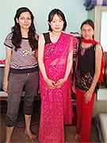
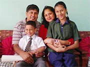

「このプログラムに対しての不安などは特にありませんでしたが、やはり自分の英語に少しも自信がなかったので、そこが１番不安でした。
短期で語学留学してみたかったのと、「ネパール」という国に興味があったので決めました。
英語の先生は、英語があまり話せない私でも、あきらめずに愛をもって教えていただきました。
宿題は時々難しかったですが、自信につながりました。
楽しく学べました。お寺にも連れて行ってくれました。

ネパールでのホームステイは考えていたよりもはるかに充実していてあまり不自由を感じませんでした。
強いて言うなら、水に少し抵抗がありましたが、それ以外全く問題なく快適に過ごすことができました。
ホストファミリーには大変親切にしていただきましたが、言葉の問題が１番のネックでした。
時々、相手に変に気を使ってしまうところなどありました。
もう少しコミュニケーションできていれば良かったかなと思ったりもします。
現地に日本の家族の写真を持っていけばよかったと思いました。
あと、日本で毎日英語で日記をつけていって大変良かったと思いました。
ネパールに行く前は、もっと何もない所かと思ってましたが、インターネットや教育（人によるが）も充実していてびっくりしました。
逆に街中はゴミが多く意外と汚くておどろきました。
またネパールに行きたいと思いますが、次はトレッキングや自然にふれたいので個人的に行くと思います。
スリランカには留学プログラムでお願いするかもしれません。
その時はよろしくお願いします。
今回は大変貴重な経験をさせていただきありがとうございました。
ホームステイは初めての経験で期待と不安で初日をむかえたのを覚えています。
もう少し自分の行きたい場所などを自由に行かせてほしかったかなーと言う感想はあります。
でも皆様、私が安全で快適に楽しく過ごせるようにと一生懸命いろいろやってくださいました。
それがものすごく伝わってきました。
食事も大変おいしく健康的で毎日楽しく過ごせました。

現地受入団体のプラビンさんには、とても親切にしていただき、お寺やハイキングにも連れて行ってくださいました。
又、ネパールの現状をほんの一部ですが実際に見ることができ、多くのことを学べました。
観光目的と語学留学目的で行くのとやはり目的によって全く違う旅になるのだなーとあたりまえですが感じました。
今回の経験を日本でも生かしてゆきたいです。
本当にありがとうございました。」